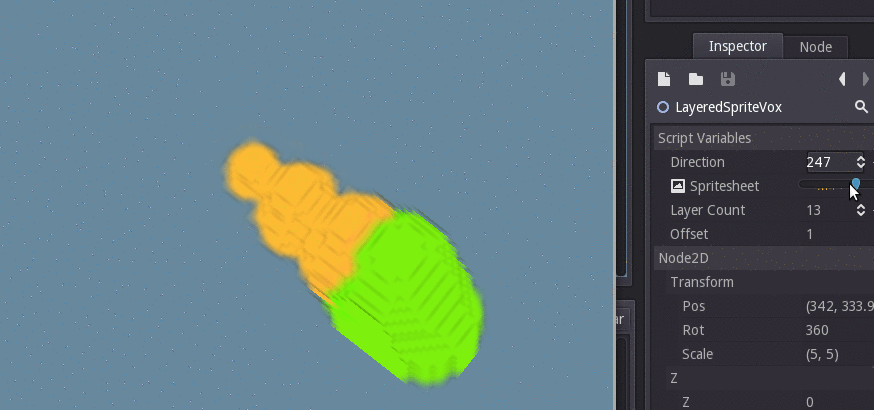

Recently on /r/gamedev there was a nice article about achieving NIUM's isometric voxel-ish 3D effect using layers of sprites. It's a very simple and obvious technique, you should read it if have a minute: 2D 3D in GameMaker Studio.
Well, I implemented it in Godot! A hastily put-together example (island? duck head?):

Check out the snippet here. It's in public domain, so feel free to use it in your projects. Use it by simply attaching it to a Node2D, and then assigning the Spritesheet and Layer Count to point to a horizontal spritesheet of your layers and the number of layers in the spritesheet, respectively. Personally I created a separate scene that I instance when I need it. For a "deeper" effect, you can try an offset greater than 1.
Note: As mentioned in the original article, its not very efficient in the general case. However, it's fine for a few smoothly-rotatable objects in an isometric environment, especially if you want precise pixel control with little hassle (as opposed to using actual 3D and rendering with pixel-y shaders). It could be optimized for rendering time, at the expense of increased memory consumption and loading time, by pre-rendering the all the directions on load, something I may add as a feature in the future to this class.